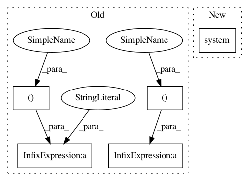

99c94d88c96c2b0a45bbbef4c8a126fa018ce513,bootstrap/build.py,,main,#Any#,11
Before Change
reg_path = os.path.join(tmp_dir, *os.path.join(reg["name"], reg["path"]).split("/")[:-1])
if not os.path.exists(reg_path):
os.makedirs(reg_path)
print("cp -r %s %s" % (src_registry, reg_path))
os.system("cp -r %s %s" % (src_registry, reg_path))
else:
reg_path = os.path.join(tmp_dir, reg["name"])
print("Adding registry %s from %s %s" % (reg["name"], reg["repo"], reg["branch"]))
After Change
excludes = [".git*", ".idea", "vendor", "node_modules"]
sync_cmd = "rsync -a %s %s %s" % (test_reg_path, os_tmp_dir, " ".join(["--exclude=" + term for term in excludes]))
print(sync_cmd)
os.system(sync_cmd)
else:
reg_path = os.path.join(os_tmp_dir, reg["name"])
print("Adding registry %s from %s %s" % (reg["name"], reg["repo"], reg["version"]))
os.system("git clone --depth 1 --branch %s %s %s" % (reg["version"], reg["repo"], reg_path))
In pattern: SUPERPATTERN
Frequency: 3
Non-data size: 5
Instances
Project Name: kubeflow/kubeflow
Commit Name: 99c94d88c96c2b0a45bbbef4c8a126fa018ce513
Time: 2018-10-11
Author: 37601826+kunmingg@users.noreply.github.com
File Name: bootstrap/build.py
Class Name:
Method Name: main
Project Name: ultralytics/yolov3
Commit Name: 0bc1db58d82c2482bfac1e32a3a43cfd5a533da2
Time: 2021-01-10
Author: glenn.jocher@ultralytics.com
File Name: utils/google_utils.py
Class Name:
Method Name: attempt_download
Project Name: dPys/PyNets
Commit Name: 97bcda32d46ac2c2d8f97f9fe44ef8cdc3253710
Time: 2020-04-19
Author: dpisner@utexas.edu
File Name: pynets/registration/register.py
Class Name: FmriReg
Method Name: atlas2t1wmni_align
Project Name: kubeflow/kubeflow
Commit Name: 99c94d88c96c2b0a45bbbef4c8a126fa018ce513
Time: 2018-10-11
Author: 37601826+kunmingg@users.noreply.github.com
File Name: bootstrap/build.py
Class Name:
Method Name: main